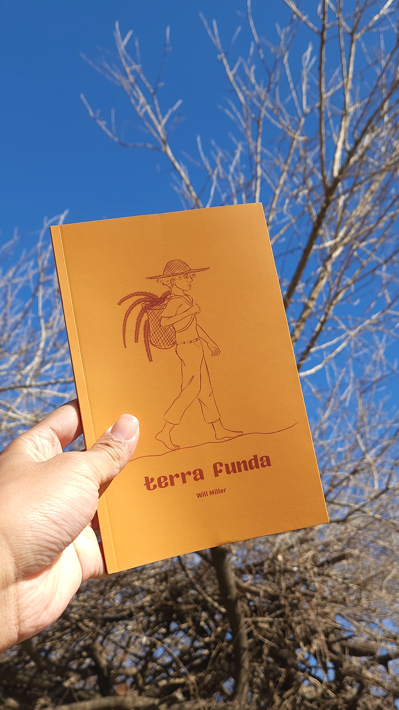

Aña Guasu
De Lautaro Zarate, 2025 | Curta-metragem
Gênero: Terror
Personagem: Mark (protagonista)
Ator • Diretor • Escritor • Educador • Produtor
Atuo na criação de narrativas pelo corpo, pela imagem e pela palavra. Projetos culturais, pesquisa, cinema e palcos.
Seja bem-vinda(o) à minha página. Sou Will Miller, ator de teatro e cinema, pesquisador, arte-educador e escritor. Atuo também na produção de projetos culturais, com experiência em escrita criativa, leis de incentivo e espaços culturais. Sou graduando em Teatro (UFMG), com intercâmbio em Artes Audiovisuais (UNLP/Argentina). Possuo experiência em edição de vídeo, motion e VFX (Adobe Premiere, After Effects).
Idade: 24 anos | Altura: 1,74m
Universidade Federal de Minas Gerais (UFMG)
Universidad Nacional de La Plata - Argentina
De Lautaro Zarate, 2025 | Curta-metragem
Gênero: Terror
Personagem: Mark (protagonista)
De Valiere Bello, 2025 | Curta-metragem
Gênero: Thriller Psicológico
Personagem: Esteban (protagonista)
De Antonio Hildebrando, 2023 | Espetáculo
Gênero: Cabaret
Personagem: Tôca
De Will Miller e Cine Barranco, 2021 | Websérie
Gênero: Drama contemporâneo
Personagem: Luan (protagonista)
De Lautaro Zarate, 2025 | Curta-metragem
Gênero: Terror
Personagem: Mark (protagonista)
De Valiere Bello, 2025 | Curta-metragem
Gênero: Thriller Psicológico
Personagem: Esteban (protagonista)
De Antonio Hildebrando, 2023 | Espetáculo
Gênero: Cabaret
Personagem: Tôca
De Will Miller e Cine Barranco, 2021 | Websérie
Gênero: Drama contemporâneo
Personagem: Luan (protagonista)
De Ray Ariana, 2024 | Cena Curta
Gênero: Teatro Negro, Contação
Direção de Elenco: Will Miller
De Uriel Agramont, 2025 | Curta-metragem
Gênero: Drama Contemporâneo
Direção de Elenco: Will Miller

Autor: Will Miller • Ed. Pá de Mundo
Páginas: 60
Dimensões: 14 x 21cm
ISBN: 978-65-01-47874-6
Classificação indicativa: 12+
Ilustrações: Rafa Maart
Lançamento: 25 de julho de 2025
Produção e Impressão: Astra Gab. Filpi e Editora Pá de Mundo
"Um mergulho no solo vivo da memória, onde afetos, brincadeiras e resistências de um povo negro se entrelaçam como raízes. Em ato único, dois atuantes dão corpo a quatro personagens em uma narrativa costurada por oralidade, ecologia e ancestralidade. Terra Funda entrelaça lembranças pessoais e coletivas num teatro de denúncia e afeto, que confronta o apagamento das memórias e a devastação ambiental do território. Aqui, cada gesto é semente, cada palavra é terra."
Redirecionamento para contato ou lojas parceiras.
Onde comprar em Belo Horizonte Onde comprar em Montes Claros Onde comprar em JanuáriaEducador e Mediador Cultural (2024-2025)
Atuação na comunicação entre obras e público visitante; criação de narrativas e roteiros para visitas guiadas, mediação para público diverso.

Educador e Mediador Museal (2023-2024)
Mediação, idealização e roteirização da série autoral "Contos e Ecologias"; criação de conteúdos para divulgação científica.
Curta-metragem
Apoio: Fundo Municipal de Cultura FMC/BH
Assistente de Produção
Websérie
Apoio: Lei Aldir Blanc
Roteirista e Produtor